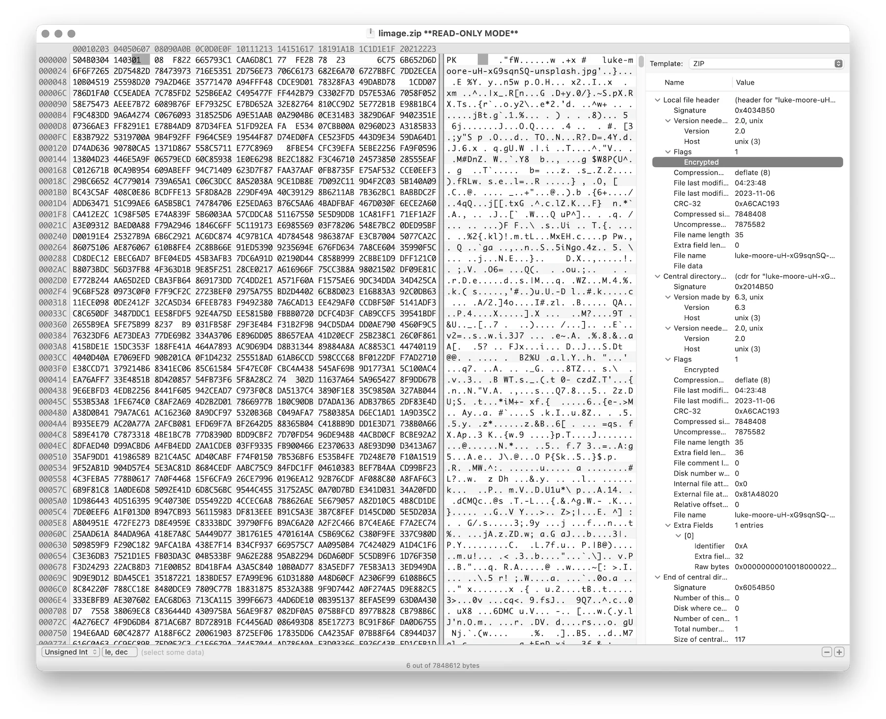
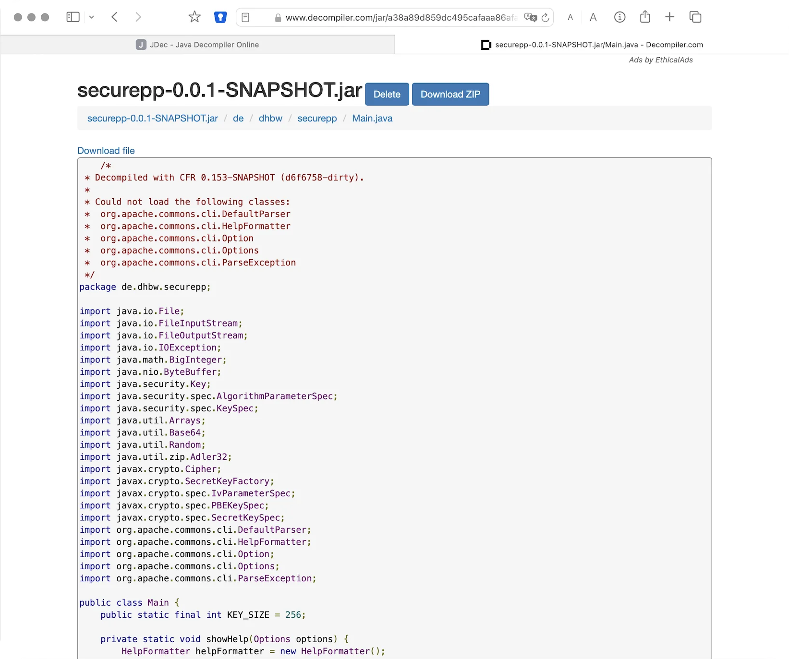
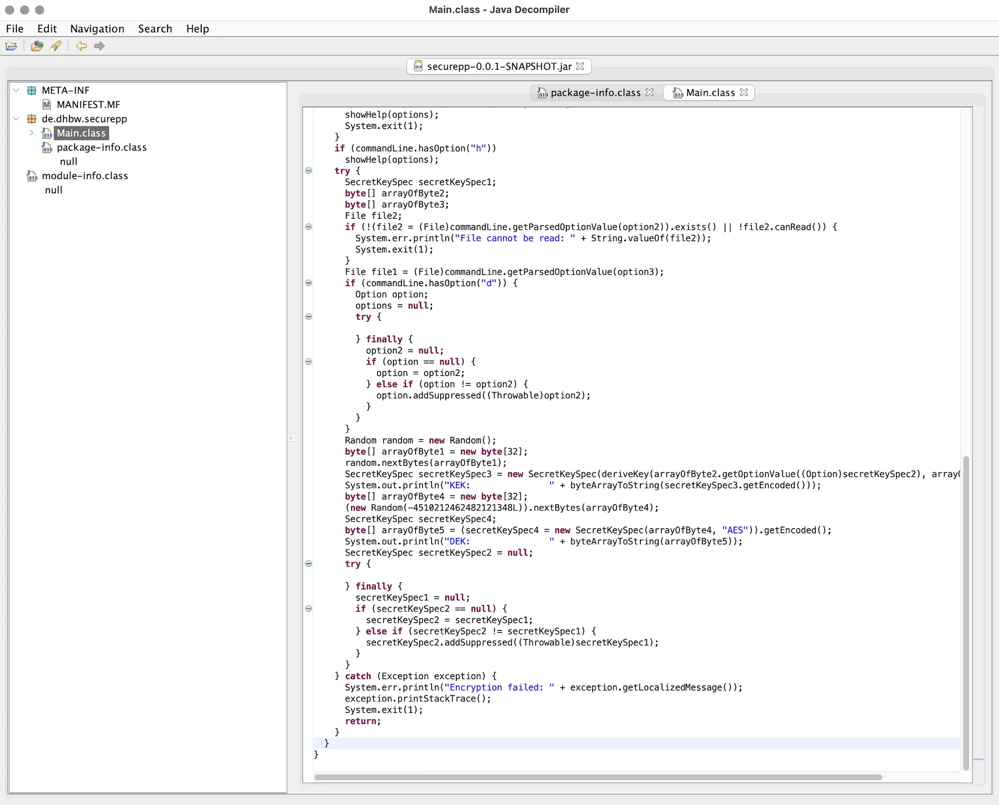
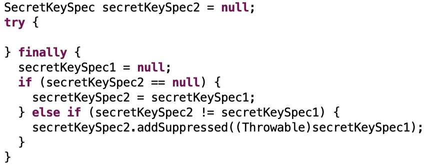
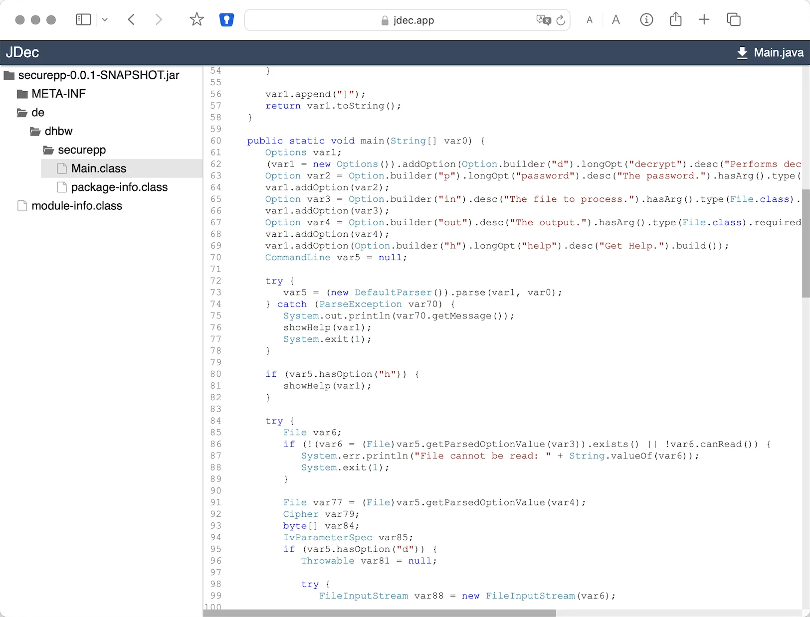

https://delors.github.io/sec-reversing101/folien.de.md.html
https://delors.github.io/sec-reversing101/folien.de.md.html.pdf
Bei der Erstellung der Unterlagen wurden KI Assistenten (insbesondere Claude aber ggf. auch ChatGPT, Ollama mit Gemma/LLama/Qwen oder OpenCode mit Kimi/Qwen/Deepseek...) unterstützend eingesetzt. Dies erfolgte insbesondere zur Unterstützung bei der Generierung von Grafiken (d. h. SVG Dateien), oder um sich Übersichtstabellen generieren zu lassen. Weiterhin wurde KI zur allgemeinen Qualitätssicherung eingesetzt. Inhalte, die ggf. von der KI vorgeschlagen wurden, wurden im Falle der Übernahme explizit validiert und angepasst.
Wer hat schon einmal Software or Hardware Reverse Engineering betrieben?
Wer kennt Java Bytecode?
Wer hat Erfahrung mit Python?
Reverse Engineering ist die Analyse von Systemen mit dem Ziel, ihren Aufbau und ihre Funktionsweise zu verstehen.
Typische Anwendungsfälle:
die Rekonstruktion (von Teilen) des Quellcodes von Programmen, die nur als Binärabbild vorliegen.
die Analyse von Kommunikationsprotokollen proprietärer Software
Herstellung von Interoperabilität
Untersuchung auf Schwachstellen
Untersuchung auf Copyrightverletzungen
Untersuchung auf Backdoors
Analyse von Viren, Würmern etc.
Umgehung von ungerechtfertigten(?) Schutzmaßnahmen (z. B. bei Malware)
CPU-Lücke macht Malware-Infektionen nahezu unumkehrbar
Die Schwachstelle verschafft Angreifern Zugang zu einer der höchsten Privilegienstufen heutiger PC-Systeme. Schadsoftware entzieht sich damit jeglicher Erkennung.
[...] Gegenüber Wired erklärten die Forscher, per Sinkclose ließen sich etwa Bootkits installieren, die für das Betriebssystem und gängige Antivirensoftware unsichtbar seien, während Angreifer einen Vollzugriff auf das Zielsystem erhielten.
Angreifer können aus dem lokalen Netzwerk heraus den Telnet-Dienst betroffener D-Link-Router durch Angabe einer bestimmten Ziel URL aktivieren.
Die Admin-Zugangsdaten sind in der Firmware hinterlegt.
Vermutlich ursprünglich für werksseitige Tests.
CVSS Base Score: 8.8 (hoch)
Informationsgewinnung zur Gewinnung aller relevanten Informationen über das Produkt.
Modellierung mit dem Ziel der (Wieder-)Gewinnung eines (abstrakten) Modells der relevanten Funktionalität.
Überprüfung (review) des Modells auf seine Richtigkeit und Vollständigkeit.
Gegeben sei eine App zum Ver- und Entschlüsseln von Dateien sowie ein paar verschlüsselte Dateien. Mögliche erste Schritte vor der Analyse von Binärcode:
Die ausführbare Datei ggf. mit file (oder sogar mit binwalk) überprüfen (z. B. wie wurde die Datei kompiliert und für welches Betriebssystem und Architektur)
Die Dateien mit einem (guten) Hexeditor auf Auffälligkeiten untersuchen.

In diesem Falle wurde Hex Fiend (Mac) verwendet. Es erlaubt durch die Anlage von Templates eine einfache Interpretation von Daten.
Eine Datei mit einem bekannten Inhalt verschlüsseln und danach vergleichen.
Eine Datei mit verschiedenen Passworten verschlüsseln.
Eine Datei mit einem wohldefinierten Muster verschlüsseln, um ggf. den „Mode of Operation“ (insbesondere ECB) zu identifizieren.
Mehrere verschiedene Dateien mit dem gleichen Passwort verschlüsseln
...
Reverse Engineering der App durchführen.
Die Rechtslage hat sich in Deutschland mehrfach geändert.
Umgehung von Kopierschutzmechanismen ist im Allgemeinen verboten.
Lizenzen verbieten das Reverse Engineering häufig; es stellt sich aber die Frage nach der Rechtmäßigkeit der Klauseln.
Studieren des Programms ohne es auszuführen; typischerweise mittels eines Disassemblers oder eines Decompilers.
Ausführen des Programms; typischerweise unter Verwendung eines Debuggers oder eines instrumentations Frameworks (z. B. Frida).
Kombination aus statischer und dynamischer Analyse.
Ansätze wie Unicorn, welches auf QEmu aufbaut, erlaubt zum Beispiel die Ausführung von (Teilen von) Binärcode auf einer anderen Architektur als der des Hosts.
Ein Beispiel wäre die Ausführung einer Methode, die im Code verschlüsselte hinterlegte Strings entschlüsselt (deobfuscation), um die Analyse zu vereinfachen.
Ggf. müssen für Teile des Codes, die die Hostfunktionalität nutzen, Stubs/Mocks bereitgestellt werden.
Überführt (maschinenlesbaren) Binärcode in Assemblercode
Kommandozeilenwerkzeuge (exemplarisch):
objdump -d
gdb
radare
javap (für Java)
Überführt (maschinenlesbarem) Binärcode bestmöglich in Hochsprache (meist C ähnlich oder Java).
Eine kleine Auswahl von verfügbaren Werkzeugen:
Hex-Rays IDAPro (kommerziell)
Ghidra (unterstützt fast jede Platform; die Ergebnisse sind sehr unterschiedlich.)
JadX (Androids .dex Format)
CFR (Java .class Dateien)
IntelliJ
Mittels Decompiler ist es ggf. möglich Code, der zum Beispiel ursprünglich in Kotlin oder Scala geschrieben und für die JVM kompiliert wurde, als Java Code zurückzubekommen.
Die Ergebnisse sind für Analysezwecke zwar häufig ausreichend gut – von funktionierendem Code jedoch ggf. (sehr) weit entfernt.
decompiler.com unterstützt eine große Anzahl ausführbaren Dateien.



Beispiel fehlgeschlagener Dekompilierung

Dient der schrittweisen Ausführung des zu analysierenden Codes oder Hardware; ermöglichen zum Beispiel Speicherinspektion und Manipulation.
gdb
lldb
x64dbg (Windows, Open-Source)
jdb (Java Debugger)
Hardware Debugger
Für das Debuggen von Hardware gibt es entsprechende Werkzeuge, z. B. Lauterbach Hardware Debugger (kommerziell und sehr teuer).
Mittels solcher Werkzeuge ist es möglich die Ausführung von Hardware Schritt für Schritt (single step mode) zu verfolgen und den Zustand der Hardware (Speicher und Register) zu inspizieren. Dies erfordert jedoch häufig eine JTAG Schnittstelle oder etwas Vergleichbares.
Techniken, die dazu dienen das Reverse Engineering zu erschweren.
Häufig eingesetzt ...
von Malware
Adware (im Kontext von Android ein häufig beobachtetes Phänomen)
zum Schutz geistigen Eigentums
für DRM / Durchsetzung von Kopierrechten
zur Prävention von „Cheating“ (insbesondere im Umfeld von Online Games)
Wenn das Programm als Source Code vertrieben wird bzw. vertrieben werden muss (JavaScript)
Arbeiten auf Quellcode oder Maschinencode Ebene
Grenze zwischen Code Minimization, Code Optimization und Code Obfuscation ist fließend.
Mögliche Werkzeuge (ohne Wertung der Qualität/Effektivität):
[Java] Proguard / Dexguard
[C/C++] Star Force
Gerade im Umfeld von klassischen Binaries für Windows, Mac und Linux erhöhen Compiler Optimierungen, z. B. von C/C++ und Rust Compilern (-O2 / -O3), bereits den Aufwand, der notwendig ist den Code zu verstehen, erheblich.
entfernen aller Debug-Informationen
Das Kürzen aller möglichen Namen (insbesondere Methoden und Klassennamen).
Das Verschleiern von Konstanten durch den Einsatz vermeintlich komplexer Berechnungen zu deren Initialisierung.
~(((int)Math.PI) ^ Integer.MAX_VALUE >> 16)+Short.MAX_VALUE= 2Die Verwendung von Unicode Codepoints für Strings oder die Verschleierung von Strings mittels rot13 Verschlüsselung.
/* ??? */ printf("\x48""e\154l\x6F"" \127o\x72""l\144!");/* = */ printf("Hello World!");Das Umstellen von Instruktionen, um das Dekompilieren zu erschweren.
Das Hinzufügen von totem Code.
Den relevanten Teil der Anwendung komprimieren und verschlüsseln und erst bei Verwendung entpacken und entschlüsseln.
...
Obfuscation auf Source Code Ebene: International Obfuscated C Code Contest
Umstellen von Instruktionen
Das Umstellen von Instruktionen erschwert die Analyse, da viele Werkzeuge zum Dekompilieren auf die Erkennung von bestimmten Mustern im Code angewiesen sind und ansonsten nur sehr generischen (Spagetti Code) oder gar unsinnigen Code zurückgeben.
Verschleierung von Strings
Das Verschleiern von Strings kann insbesondere das Reversen von Binärcode erschweren, da ein Angreifer häufig „nur“ an einer ganz bestimmten Funktionalität interessiert ist und dann Strings ggf. einen sehr guten Einstiegspunkt für die weitergehende Analyse bieten.
Stellen Sie sich eine komplexe Java Anwendung vor, in der alle Namen von Klassen, Methoden und Attributen durch einzelne oder kurze Sequenzen von Buchstaben ersetzt wurden und sie suchen danach wie von der Anwendung Passworte verarbeitet werden. Handelt es sich um eine GUI Anwendung, dann wäre zum Beispiel die Suche nach Text, der in den Dialogen vorkommt (z. B. "Password") z. B. ein sehr guter Einstiegspunkt.
ClassLoader dienen dazu Klassen dynamisch zu laden. D. h. eine Klasse wird erst dann von der JVM geladen, wenn sie benötigt bzw. angefordert wird.
Jeder ClassLoader spannt seinen eigenen Namensraum auf.
Zwei Instanzen der gleichen Klasse (d. h. mit demselben Bytecode) sind nicht gleich (Referenzgleichheit), wenn zwei verschiedene ClassLoader genutzt wurden.
ClassLoader stehen in einer Hierarchie.
ClassLoader können genutzt werden, um:
ein Programm dynamisch zu erweitern (Plug-ins)
um Klassen zu laden, die zur Laufzeit generiert wurden
um den Bytecode zu manipulieren, bevor er von der JVM ausgeführt wird.
1static class MyClassLoader extends ClassLoader {2public MyClassLoader(ClassLoader parent) { super(parent); }34@Override5protected Class<?> findClass(final String name) throws ClassNotFoundException {6try (final var in = super.getResourceAsStream(name)) {7final var classBytes = new byte[in.available()];8final var readBytes = in.read(classBytes);9if (readBytes != classBytes.length) {10throw new IOException("failed reading class file: " + name);11}12return defineClass(name,classBytes, 0, classBytes.length);13} catch (IOException ioe) {14throw new ClassNotFoundException("failed loading " + name, ioe);15} } }
Ein Singleton
1public class MySingleton {23private static MySingleton instance = null;4private MySingleton() {}56public static synchronized MySingleton instance() {7if (instance == null) instance = new MySingleton();8return instance;9}10}
Gleichheit von Instanzen
1Object a = MySingleton.instance();2Object b = MySingleton.instance();3System.out.println(a == b);
Ergebnis: trueVerwendung des SystemClassLoader
1ClassLoader cl1 = ClassLoader.getSystemClassLoader();2Class<?> clazz1 = cl1.loadClass("demo.MySingleton");3Object a = clazz14.getDeclaredMethod("instance", new Class<?>[] {})5.invoke(null);6ClassLoader cl2 = ClassLoader.getSystemClassLoader();7Class<?> clazz2 = cl2.loadClass("demo.MySingleton");8Object b = clazz29.getDeclaredMethod("instance", new Class<?>[] {})10.invoke(null);1112System.out.println(a == b);
Ergebnis: trueVerwendung von zwei Instanzen von MyClassLoader
1ClassLoader cl1 = new MyClassLoader();2Class<?> clazz1 = cl1.loadClass("demo.MySingleton");3Object a = clazz14.getDeclaredMethod("instance", new Class<?>[] {})5.invoke(null);6ClassLoaderacl2 = new MyClassLoader();7Class<?> clazz2 = cl2.loadClass("demo.MySingleton");8Object b = clazz29.getDeclaredMethod("instance", new Class<?>[] {})10.invoke(null);1112System.out.println(a == b);
Ergebnis: falseJava Bytecode ist die Sprache, in der Java (oder Scala, Kotlin, ...) Programme auf der Java Virtual Machine (JVM) [2] ausgeführt werden.
In den meisten Fällen arbeiten Java Decompiler so gut, dass ein tiefgehendes Verständnis von Java Bytecode selten notwendig ist.
Java Bytecode kann — muss aber nicht — interpretiert werden. (Z. B. können „virtuelle Methodenaufrufe“ in Java schneller sein als in C++.)
Die JVM ist eine stackbasierte virtuelle Maschine.
Die getypten Operanden eines Befehls werden auf einem Stack abgelegt und die Operationen arbeiten auf den obersten Elementen des Stacks. Jeder Thread hat seinen eigenen Stack.
Instruktionen
nop bipush 100 → int bipush 50 → int iadd ← 2 ⨉ int → intVeränderung des Stacks
└─────┘ │ 100 │ └─────┘ │ 50 │ │ 100 │ └─────┘ │ 150 │ └─────┘
Eine Methode muss einen Stack begrenzter Höhe aufweisen. Code, für den die Stackhöhe nicht berechenbar ist, wird vom Compiler abgelehnt. (Zum Beispiel ein bipush in einer Endlosschleife.) Die benötigte Höhe des Stacks wird vom Compiler berechnet und von der JVM überprüft.
Die Java Virtual Machine verwendet lokale Variablen zur Übergabe von Parametern beim Methodenaufruf.
Beim Aufruf von Klassenmethoden (static) werden alle Parameter in aufeinanderfolgenden lokalen Variablen übergeben, beginnend mit der lokalen Variable 0.
D. h. in der aufrufenden Methode werden die Parameter vom Stack geholt und in lokalen Variablen gespeichert.
Beim Aufruf von Instanzmethoden wird die lokale Variable 0 dazu verwendet, um die Referenz (this) auf das Objekt zu übergeben, auf dem die Instanzmethode aufgerufen wird.
Anschließend werden alle Parameter in aufeinanderfolgenden lokalen Variablen übergeben, beginnend mit der lokalen Variable 1.
Die Anzahl der benötigten lokalen Variablen wird vom Compiler berechnet und von der JVM überprüft.
Ein Constructor welcher keine expliziten Parameter hat und nur den super Konstruktor aufruft.
1// Method descriptor ()V2// Stack: 1, Locals: 13public Main();40 aload_0 [this]51 invokespecial java.lang.Object()64 return
Die Zeilennummern und die Informationen über die lokalen Variablen sind optional und werden nur für Debugging Zwecke benötigt.
Line numbers: [pc: 0, line: 9]
Local variable table: [pc: 0, pc: 5] local: this
index: 0
type: de.dhbw.simplesecurepp.MainEs gibt weitere Metainformationen, die „nur“ für Debugging-Zwecke benötigt werden, z. B. Informationen über die ursprünglich Quelle des Codes oder die sogenannte "Local Variable Type Table" in Hinblick auf generische Typinformationen. Solche Informationen werden häufig vor Auslieferung entfernt bzw. nicht hineinkompiliert.
1// Method descriptor ([Ljava/lang/String;)V2// Stack: 5, Locals: 83public static void main(java.lang.String[] args) throws ...;40 aload_0 [args]51 arraylength62 iconst_273 if_icmpeq 74 // integer comparison for equality86 getstatic java.lang.System.err : java.io.PrintStream99 ldc <String "SimpleSecure++">1011 invokevirtual java.io.PrintStream.println(java.lang.String) : void11...
In einigen Anwendungsgebieten ist es möglich auf das explizite Speichern von Passwörtern ganz zu verzichten[*].
Stattdessen wird z. B. einfach versucht das Ziel zu entschlüsseln und danach evaluiert ob das Passwort (vermutlich) das Richtige war.
Kann darauf verzichtet werden zu überprüfen ob das Passwort korrekt war, dann sind keine Metainformationen notwendig und die verschlüsselte Datei kann genauso groß sein wie die unverschlüsselte Datei.
Gegeben
Reversing SimpleSecure++
Ihnen liegt eine verschlüsselte Datei vor (42.enc), die mit dem Program simplesecurepp verschlüsselt wurde. Informationen zum verwendeten Passwort liegen nicht vor. Es ist jedoch davon auszugehen, dass das Passwort sicher ist. Ziel ist die Entschlüsselung der Datei. Analysieren Sie die Anwendung, um einen möglichen Ansatzpunkt zu finden, um die Daten erfolgreich zu entschlüsseln.Sollten Sie Code schreiben in Hinblick auf einen Bruce Force, dann sollten Sie diesen ggf. auch parallelisieren, um möglichst schnell zum Ergebnis zu gelangen.
Gegeben
Exemplarische Verwendung zum Verschlüsseln
java -jar securepp-0.0.1.jar de.dhbw.securepp.Main \
-p 'VielleichtIstEsRichtig-vielleichtAuchNICHT...' \
-in Poem.txt -out Poem.encReversing Secure++
Entschlüsseln Sie die Datei Poem.enc, die mit Secure++ verschlüsselt wurde.
Sie können zum Beispiel das Programm über ein Shellscript oder ein anderes Java Programm ansprechen, um zu versuchen das Passwort zu Bruteforcen.
Alternativ oder ergänzend können Sie versuchen mittels Reverse Engineering herauszufinden wie die Verschlüsselung implementiert wurde und ob sich daraus effizientere/andere Möglichkeiten ergeben.
Selbstverständlich können Sie versuchen die Entschlüsselung ggf. auch in (z. B.) Python nachbauen.
Die Password-Policy, die dem Passwort zugrunde liegt ist die folgende:
mind. 16 Zeichen
mind. 4 Ziffern
mind. 2 Großbuchstaben
mind. 2 Kleinbuchstaben
mind. 4 verschiedene Sonderzeichen aus dem Zeichensatz: -!$?#@
Es dürfen nicht alle Sonderzeichen hintereinander vorkommen; d. h. es muss mindestens zwei Blöcke von Sonderzeichen geben; ein Block kann ein oder mehrere Sonderzeichen enthalten.
Darüber hinaus sei Ihnen bekannt, dass die Person in seinen Passworten sehr gerne die Namen der Orte verwendet, die er bereits bereist hat. Ihnen sei außerdem bekannt, dass die Person zwischen einer großen Anzahl von Großstädten in Westeuropa unterwegs war. Darüber hinaus trennt er die Namen der Städte in bekannten Passwörtern häufig mit “.”, “_" oder “-“. Weiterhin sei Ihnen bekannt, dass er oft das Datum bzw. Jahr verwendet an denen er die Städte in den letzten Jahren besucht hat. Ansonsten verhält er sich augenscheinlich recht typisch was das Anfügen von Zahlen und Sonderzeichen betrifft. Beides ist in bestehenden Passwörtern am häufigsten in entsprechenden Blöcken am Ende zu finden.